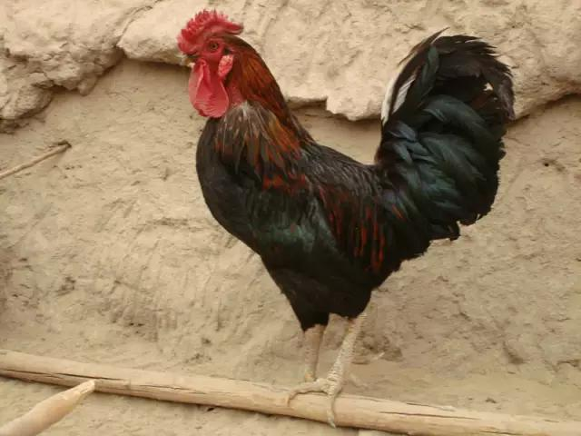

程序猿、攻城狮，请多指教
有一只老狮子病了，躲在洞穴中大声呻吟，附近的一些动物听到狮子的呻吟声，纷纷进洞探视。狐狸听到了这消息，也前往探视，走到洞穴前，只听到老狮子呻吟声越来越大，可怜极了，这时原本打算进去的狐狸，忽然竖起耳朵，收回已经跨进洞穴的前脚，在洞穴四周来回踱步。洞里的老狮子眼见狐狸迟迟没有进洞，忍不住问狐狸说：“狐狸啊！你既然来了，为什么不进来呢？”狐狸回答：“我只见一些往里走的动物脚印，却看不到往外走出来的脚印，我怎么敢进去呢！?”
一农户在杀鸡前的晚上喂鸡，不经意地说：快吃吧，这是你最后一顿！第二日，见鸡已躺倒并留遗书：“爷已吃老鼠药，你们别想吃爷了，爷他妈也不是好惹的。”

一位年轻男士，在风景区遇见一位漂亮有气质的美女，就一直跟在她后面走了很长的一段路，最后这位女郎忍不住转身问他说：“你为什么一直老跟着我？”他很诚恳的对她表白说：“因为你是我所见过最美丽最有气质的女人，请你答应我，当我的女朋友！”女郎回答说：“现在只要你回头看，就能看到我妹妹，她长得比我还漂亮！”那位男士听了，马上转过身，但看到的只是随处可见到的普通女子。“你为什么骗我？” 他质问那位女郎。“是你在骗我啊！如果你真的喜欢我，为何还要回头看呢？” 女郎回答说，接着转身快步离去。